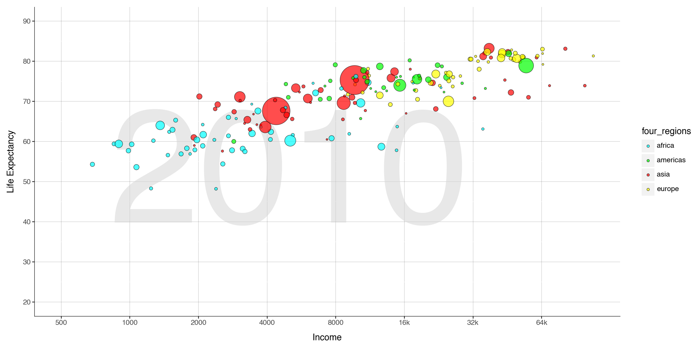
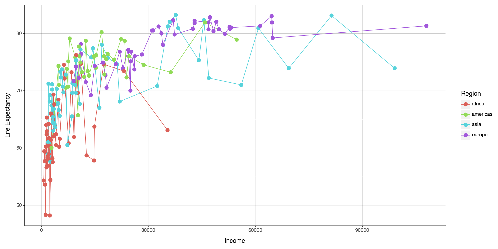
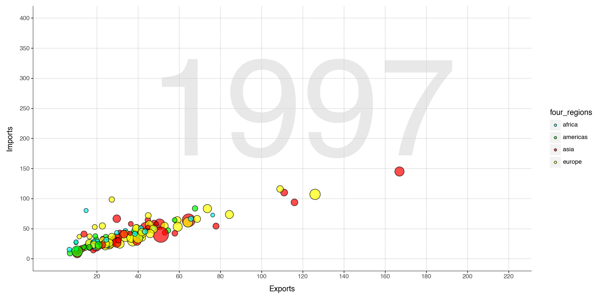
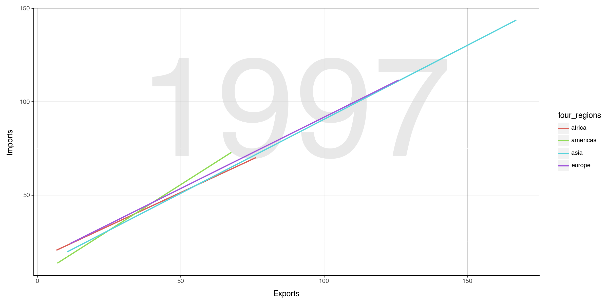
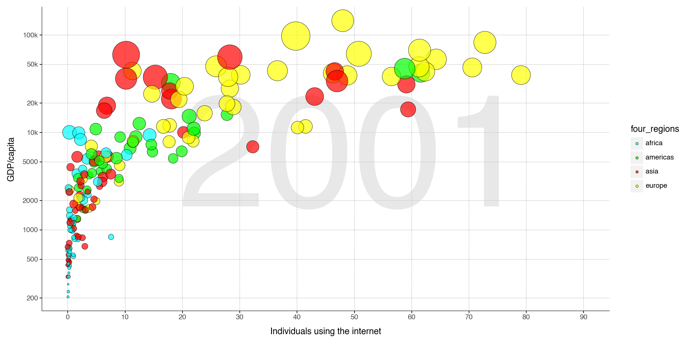
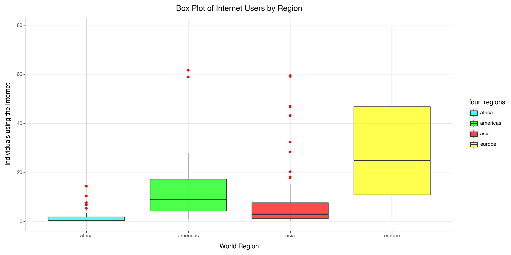

Code
import pandas as pd
import numpy as np
from plotnine import *import pandas as pd
import numpy as np
from plotnine import *Getting the q1data
d1 = pd.read_csv('/Users/benji/Documents/Machine Learning/Data/q1data.csv')
d1| income | life_exp | population | year | country | four_regions | six_regions | eight_regions | world_bank_region | |
|---|---|---|---|---|---|---|---|---|---|
| 0 | 1910.0 | 61.0 | 29200000.0 | 2010 | Afghanistan | asia | south_asia | asia_west | South Asia |
| 1 | 11100.0 | 78.1 | 2950000.0 | 2010 | Albania | europe | europe_central_asia | europe_east | Europe & Central Asia |
| 2 | 11100.0 | 74.7 | 36000000.0 | 2010 | Algeria | africa | middle_east_north_africa | africa_north | Middle East & North Africa |
| 3 | 46900.0 | 81.9 | 84500.0 | 2010 | Andorra | europe | europe_central_asia | europe_west | Europe & Central Asia |
| 4 | 7680.0 | 60.8 | 23400000.0 | 2010 | Angola | africa | sub_saharan_africa | africa_sub_saharan | Sub-Saharan Africa |
| ... | ... | ... | ... | ... | ... | ... | ... | ... | ... |
| 192 | 20400.0 | 75.4 | 28400000.0 | 2010 | Venezuela | americas | america | america_south | Latin America & Caribbean |
| 193 | 5350.0 | 73.3 | 88000000.0 | 2010 | Vietnam | asia | east_asia_pacific | east_asia_pacific | East Asia & Pacific |
| 194 | 4700.0 | 67.8 | 23200000.0 | 2010 | Yemen | asia | middle_east_north_africa | asia_west | Middle East & North Africa |
| 195 | 3200.0 | 57.5 | 13600000.0 | 2010 | Zambia | africa | sub_saharan_africa | africa_sub_saharan | Sub-Saharan Africa |
| 196 | 2560.0 | 54.4 | 12700000.0 | 2010 | Zimbabwe | africa | sub_saharan_africa | africa_sub_saharan | Sub-Saharan Africa |
197 rows × 9 columns
Removing the null values
d1.dropna(inplace = True)Data Info
d1.info()<class 'pandas.core.frame.DataFrame'>
Index: 191 entries, 0 to 196
Data columns (total 9 columns):
# Column Non-Null Count Dtype
--- ------ -------------- -----
0 income 191 non-null float64
1 life_exp 191 non-null float64
2 population 191 non-null float64
3 year 191 non-null int64
4 country 191 non-null object
5 four_regions 191 non-null object
6 six_regions 191 non-null object
7 eight_regions 191 non-null object
8 world_bank_region 191 non-null object
dtypes: float64(3), int64(1), object(5)
memory usage: 14.9+ KBPlotting the graph
x_breaks = [500, 1000, 2000, 4000, 8000, 16000, 32000, 64000]
x_labels = ["500", "1000", "2000", "4000", "8000", "16k", "32k", "64k"]
color_mapping = {
'asia': 'red',
'africa': 'aqua',
'americas': 'lime',
'europe': 'yellow'
}
(ggplot(d1, aes(x='income', y='life_exp', size='population', fill='four_regions')) +
annotate('text', x=5000, y=50, label='2010', size=200, color='lightgray', alpha=0.5) +
geom_point(alpha=0.7,stroke=0.3, color='black') +
scale_fill_manual(values=color_mapping) +
scale_size(range=(1, 20)) +
scale_x_continuous(trans='log10', # Set X-axis to logarithmic scale
breaks=x_breaks,
labels = x_labels,
limits=(500, 108001)
)+
scale_y_continuous(breaks = [20,30,40,50,60,70,80,90],
limits=(20, 90)) + # Control the Y-axis limits
guides(size=False) +
# Control bubble size range
labs(x="Income",
y="Life Expectancy",
size="Population",) +
theme(
figure_size=(12, 6),
panel_background=element_blank(), # Remove the panel background
axis_line=element_line(color='black', size=0.5),
panel_grid_major_x= element_line(color='black', size=0.5, alpha = .2),
panel_grid_major_y=element_line(color='black', size=0.5, alpha = .2),
)
)
Other Possible graph could be line plot we can see the trend lines of life expentency with income. But interpreting the line plot is difficult for this particular datset. As geom_plot gives us more information reagarding the datset.
line_plot = (
ggplot(d1, aes(x='income', y='life_exp',color='four_regions', group='four_regions')) + # Grouping by Region for lines
geom_line() + # Add lines connecting points
geom_point(size=3) + # Add points for visibility
labs(x='income',
y='Life Expectancy',
color='Region') +
theme(
figure_size=(12, 6),
panel_background=element_blank(), # Remove the panel background
axis_line=element_line(color='black', size=0.5),
panel_grid_major_x= element_line(color='black', size=0.5, alpha = .2),
panel_grid_major_y=element_line(color='black', size=0.5, alpha = .2),
)
)
# Show the plot
line_plot.show()
Getting the q2data
d2 = pd.read_csv('/Users/benji/Documents/Machine Learning/Data/q2data.csv')
d2| imports | exports | energy | year | country | four_regions | six_regions | eight_regions | world_bank_region | |
|---|---|---|---|---|---|---|---|---|---|
| 0 | NaN | NaN | NaN | 1997 | Afghanistan | asia | south_asia | asia_west | South Asia |
| 1 | 36.7 | 11.5 | 427 | 1997 | Albania | europe | europe_central_asia | europe_east | Europe & Central Asia |
| 2 | 22.5 | 22.6 | 825 | 1997 | Algeria | africa | middle_east_north_africa | africa_north | Middle East & North Africa |
| 3 | NaN | NaN | NaN | 1997 | American Samoa | NaN | NaN | NaN | NaN |
| 4 | NaN | NaN | 434 | 1997 | Angola | africa | sub_saharan_africa | africa_sub_saharan | Sub-Saharan Africa |
| ... | ... | ... | ... | ... | ... | ... | ... | ... | ... |
| 201 | 52.2 | 44.8 | 340 | 1997 | Vietnam | asia | east_asia_pacific | east_asia_pacific | East Asia & Pacific |
| 202 | NaN | NaN | NaN | 1997 | Virgin Islands (U.S.) | NaN | NaN | NaN | NaN |
| 203 | NaN | NaN | 241 | 1997 | Yemen | NaN | NaN | NaN | NaN |
| 204 | 31.6 | 24.6 | 617 | 1997 | Zambia | africa | sub_saharan_africa | africa_sub_saharan | Sub-Saharan Africa |
| 205 | 45.1 | 43.4 | 845 | 1997 | Zimbabwe | africa | sub_saharan_africa | africa_sub_saharan | Sub-Saharan Africa |
206 rows × 9 columns
Removing the null values
d2.dropna(inplace = True)Converting the string values to float
def convert_to_float(value):
if isinstance(value, str):
if value.endswith('k'):
return float(value[:-1]) * 1000 # Convert 'k' values
else:
return float(value) # Convert regular strings
return np.nan
d2['energy'] = d2['energy'].apply(convert_to_float)
d2.info()<class 'pandas.core.frame.DataFrame'>
Index: 127 entries, 1 to 205
Data columns (total 9 columns):
# Column Non-Null Count Dtype
--- ------ -------------- -----
0 imports 127 non-null float64
1 exports 127 non-null float64
2 energy 127 non-null float64
3 year 127 non-null int64
4 country 127 non-null object
5 four_regions 127 non-null object
6 six_regions 127 non-null object
7 eight_regions 127 non-null object
8 world_bank_region 127 non-null object
dtypes: float64(3), int64(1), object(5)
memory usage: 9.9+ KBPlotting the graph
x_breaks = list(map(lambda x: x * 20, range(1, 13)))
y_breaks = list(map(lambda y: y * 50, range(0, 9)))
(ggplot(d2, aes(x='exports', y='imports', size='energy', fill='four_regions')) +
annotate('text', x=120, y=230, label='1997', size=200, color='lightgray', alpha=0.5) +
geom_point(alpha=0.7,stroke=0.5, color='black') +
scale_fill_manual(values=color_mapping) +
scale_size(range=(2,12)) +
scale_x_continuous(breaks= x_breaks,
limits=(0,220)
)+
scale_y_continuous(breaks = y_breaks,
limits=(0, 400)) + # Control the Y-axis limits
guides(size=False) +
# Control bubble size range
labs(x="Exports",
y="Imports",
size="Population",
) +
# theme_minimal()+
# theme(figure_size=(12, 6))
theme(
figure_size=(12, 6),
panel_background=element_blank(), # Remove the panel background
axis_line=element_line(color='black', size=0.5),
panel_grid_major_x= element_line(color='black', size=0.5, alpha = .2),
panel_grid_major_y=element_line(color='black', size=0.5, alpha = .2),
)
)
For this task we can use geom_smooth with method as linear regression. We can use that to find the relation between imports and exports of the different regions of the world and compare them.
x_breaks = list(map(lambda x: x * 20, range(1, 13)))
y_breaks = list(map(lambda y: y * 50, range(0, 9)))
(ggplot(d2, aes(x='exports', y='imports', size='energy', fill='four_regions')) +
annotate('text', x=90, y=90, label='1997', size=200, color='lightgray', alpha=0.5) +
geom_smooth( aes(color='four_regions'),method='lm', se=False) +
scale_fill_manual(values=color_mapping) +
scale_size(range=(2,12)) +
guides(size=False) +
# Control bubble size range
labs(x="Exports",
y="Imports",
size="Population",
) +
# theme_minimal()+
# theme(figure_size=(12, 6))
theme(
figure_size=(12, 6),
panel_background=element_blank(), # Remove the panel background
axis_line=element_line(color='black', size=0.5),
panel_grid_major_x= element_line(color='black', size=0.5, alpha = .2),
panel_grid_major_y=element_line(color='black', size=0.5, alpha = .2),
)
)
Getting the q3data
d3 = pd.read_csv('/Users/benji/Documents/Machine Learning/Data/q3data.csv')
d3| internet_users | gdp | income | year | country | four_regions | six_regions | eight_regions | world_bank_region | |
|---|---|---|---|---|---|---|---|---|---|
| 0 | 0.00456 | 330.0 | 1190.0 | 2001 | Afghanistan | asia | south_asia | asia_west | South Asia |
| 1 | 0.39000 | 2570.0 | 6780.0 | 2001 | Albania | europe | europe_central_asia | europe_east | Europe & Central Asia |
| 2 | 1.59000 | 3770.0 | 9230.0 | 2001 | Algeria | africa | middle_east_north_africa | africa_north | Middle East & North Africa |
| 3 | NaN | 10500.0 | NaN | 2001 | American Samoa | NaN | NaN | NaN | NaN |
| 4 | 11.30000 | 42600.0 | 35600.0 | 2001 | Andorra | europe | europe_central_asia | europe_west | Europe & Central Asia |
| ... | ... | ... | ... | ... | ... | ... | ... | ... | ... |
| 210 | 1.85000 | 847.0 | 3270.0 | 2001 | Vietnam | asia | east_asia_pacific | east_asia_pacific | East Asia & Pacific |
| 211 | 27.50000 | 36700.0 | NaN | 2001 | Virgin Islands (U.S.) | NaN | NaN | NaN | NaN |
| 212 | 0.51900 | 1190.0 | 4940.0 | 2001 | Yemen | asia | middle_east_north_africa | asia_west | Middle East & North Africa |
| 213 | 0.47800 | 991.0 | 2080.0 | 2001 | Zambia | africa | sub_saharan_africa | africa_sub_saharan | Sub-Saharan Africa |
| 214 | 1.10000 | 1330.0 | 3190.0 | 2001 | Zimbabwe | africa | sub_saharan_africa | africa_sub_saharan | Sub-Saharan Africa |
215 rows × 9 columns
Removing the null values
d3.dropna(inplace = True)Ploting the garph
(ggplot(d3, aes(x='internet_users', y='gdp', size='income', fill='four_regions')) +
annotate('text', x=50, y=4500, label='2001', size=200, color='lightgray', alpha=0.5) +
geom_point(alpha=0.7,stroke=0.3, color='black') +
scale_fill_manual(values=color_mapping) +
scale_size(range=(1,20)) +
scale_x_continuous(breaks=list(map(lambda x: x * 10, range(0, 10))),
limits=(0,90)) +
scale_y_log10(breaks = [200, 500, 1000, 2000, 5000, 10000, 20000, 50000, 100000],
labels = ['200', '500', '1000', '2000', '5000', '10k', '20k', '50k', '100k']) +
labs(x="Individuals using the internet",
y="GDP/capita",
size="income",) +
guides(size=False) +
theme(
figure_size=(12, 6),
panel_background=element_blank(), # Remove the panel background
axis_line=element_line(color='black', size=0.5),
panel_grid_major_x= element_line(color='black', size=0.5, alpha = .2),
panel_grid_major_y=element_line(color='black', size=0.5, alpha = .2),
)
)
We can crate a box plot this data but we can’t do much with that as we don’t get any better inference from it. We can se there are no outliers in europe that is interting I guess.
(ggplot(d3, aes(x='four_regions', y='internet_users', fill='four_regions')) +
geom_boxplot(alpha=0.7, outlier_color='red') + # Create box plot with red outliers
scale_fill_manual(values=color_mapping) +
labs(x="World Region", y="Individuals using the Internet", title="Box Plot of Internet Users by Region") +
theme(
figure_size=(12, 6),
panel_background=element_blank(),
axis_line=element_line(color='black', size=0.5),
panel_grid_major_x=element_line(color='black', size=0.5, alpha=0.2),
panel_grid_major_y=element_line(color='black', size=0.5, alpha=0.2),
)
)